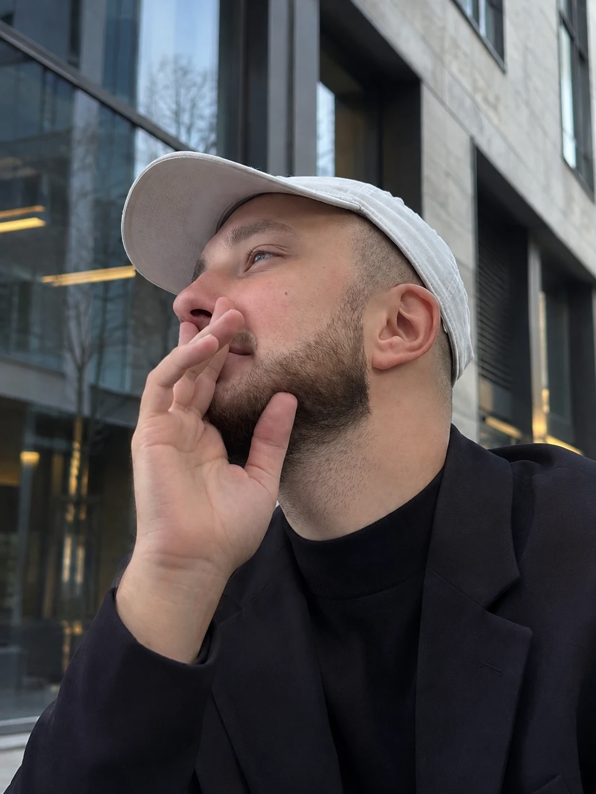
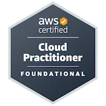
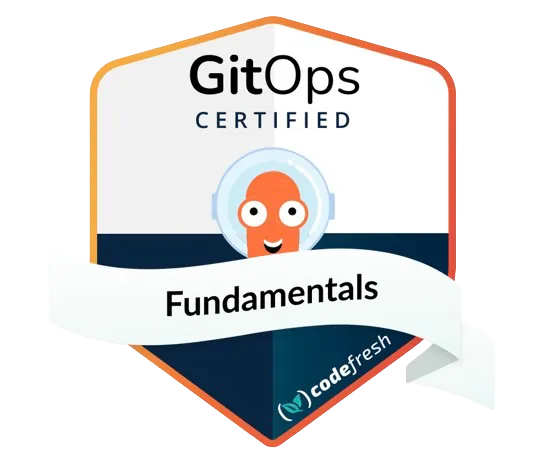
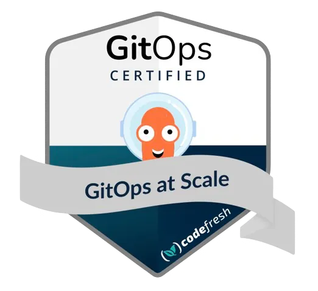
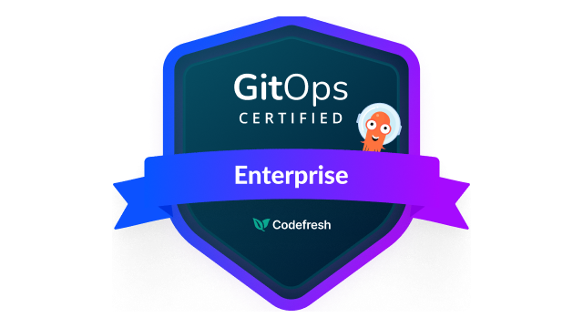
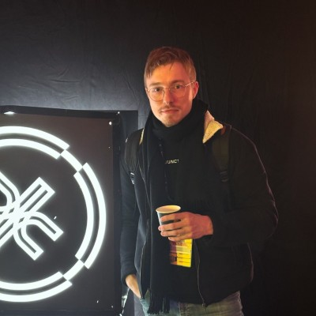
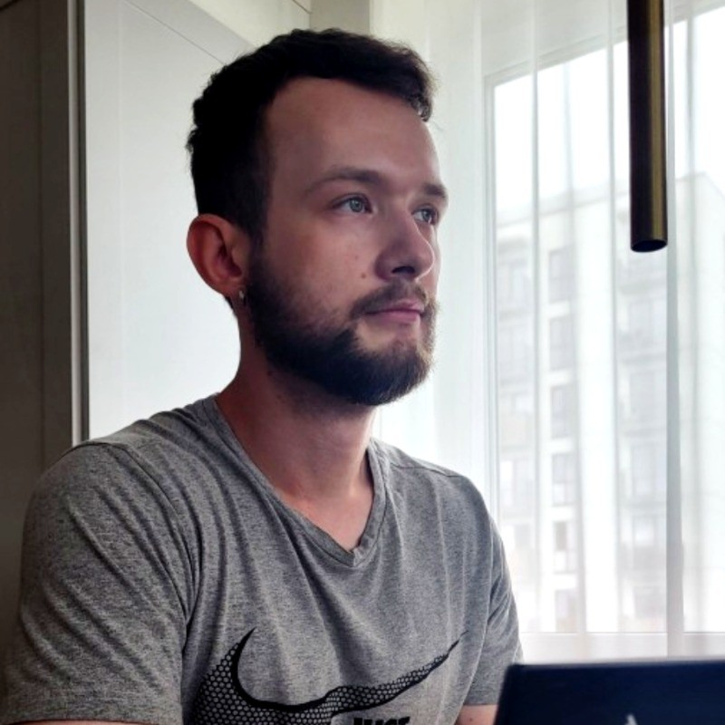

// SRE @ CARIAD · Volkswagen Group
I turn cloud complexity into reliable, cost-efficient systems — €5M+ in operational & cloud savings delivered across Kubernetes, AWS, Azure, FinOps & GitOps.

Outcomes over output — the numbers that moved the business, not just the dashboard.
I'm a software & site reliability engineer with 6+ years of experience spanning software engineering, platform engineering and SRE — today as Senior Site Reliability Engineer at CARIAD (Volkswagen Group), with a track record across banking, national health systems and automotive. I've shipped services in Go, Kotlin, Java and Node.js, and run the platforms they live on.
I'm passionate about open-source collaboration and contribution, I keep up relentlessly with modern technologies, and I automate everything I can — all while matching the compliance and security requirements the business operates under.
My mindset has shifted with experience. I used to think like a pure technical engineer — obsessing over languages and tools. Now I know there are no impossible solutions: everything flows from business requirements, and the right solution is built on top of them, never the other way around.
That's my edge — connecting engineering with the business. At CARIAD I led the FinOps & DevOps analysis that stood up a new 15+ person team and unlocked up to €3M in partner savings, and I repeatedly cut operational costs by 50–85% by fixing architecture end-to-end.
Total operational & cloud cost savings delivered.
Avg cost & efficiency gain across 10+ projects (peak 85%).
Peak build & release time saved (now <7 min).
Engineers hired across 3 diverse teams with leads.
From shipping code to running the platforms it lives on — how I turn engineering into a competitive advantage.
I build, not just operate — shipping production services in Go, Kotlin, Java and Node.js with SOLID, 12-factor and clean-architecture principles. I'm an active open-source contributor across many Git repositories, I founded KostLabs, an R&D organization for exploring and prototyping new ideas, and I author practices.kostlabs.org — a living guide to modern engineering practices.
I architect cost-efficient platforms on AWS and Azure Kubernetes — GitOps with ArgoCD & FluxCD, progressive delivery with Flagger & Argo Rollouts, and centralized Helm charts product teams actually enjoy using.
I keep critical systems fast and resilient — E2E observability with OpenTelemetry, New Relic, ELK, Prometheus & Grafana, cutting incident detection from hours to minutes and killing JVM leaks at the root.
I turn cloud spend into savings. €5M+ in operational & cloud costs removed and a 65% average cost & efficiency gain across 10+ big projects (peak 85%) — by optimizing architecture, not just instance sizes.
I lead architecture across teams, found chapters, workshops and AI culture, and mentor engineers into their next role — translating complex engineering into business outcomes leaders can act on.
6+ years from Linux sysadmin to senior SRE across banking, health and automotive.
Senior Site Reliability Engineer · Jun 2025 — Now
Site Reliability Engineer · May 2024 — Jun 2025
Freelance Mentor · Mar 2025 — Now
Contributor · Mar 2024 — May 2025
Founder · Jul 2024 — Mar 2025
Founder · Jul 2024 — Nov 2024
Site Reliability Engineer · Feb 2024 — Apr 2024
DevOps Engineer · Oct 2023 — Jan 2024
Senior Platform Engineer / Technical Lead · Feb 2023 — Oct 2023
Platform Engineer · Jun 2021 — Feb 2023
Linux System Administrator · Apr 2020 — Jun 2021
Trainee · Jul 2019 — Dec 2019

Amazon Web Services · 2023

Codefresh · 2023

Codefresh · 2023

Codefresh · 2025
Offensive Security
CNCF
Red Hat
Junior IT Systems Specialist · 2017 — 2020
Secondary Education · 2008 — 2017
Helping engineers and students reach their next level — within months.
As a freelance mentor, I run a personalised Software Engineering & DevOps Lifecycle program covering everything needed to enter the job market or achieve significant career growth — fast.
"He's not just a mentor — he's a true leader with an amazing talent for bringing out the best in people. He pushes you to think outside the box and tackle challenges in ways you hadn't considered before."

"Working with Christofher has been transformative for my career. He helped me bridge theory and practice — and develop a real problem-solving mindset, not just technical skills."

Whether you need an SRE/DevOps consultant, cloud & FinOps advice, or want to discuss a collaboration — my channel is always open.